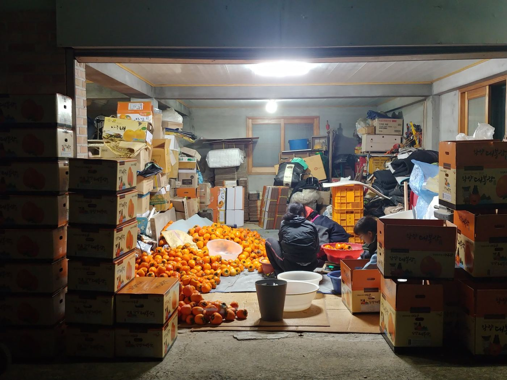
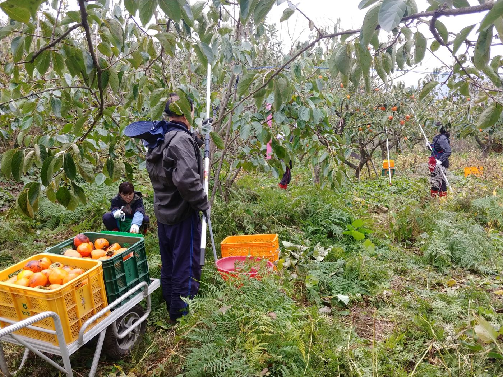
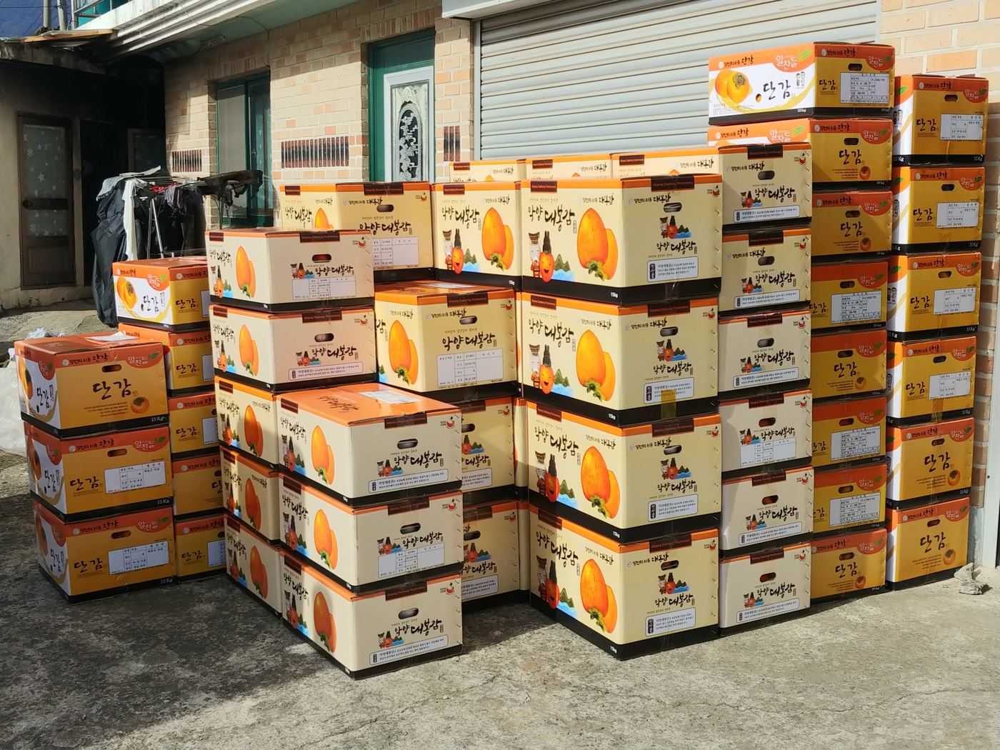
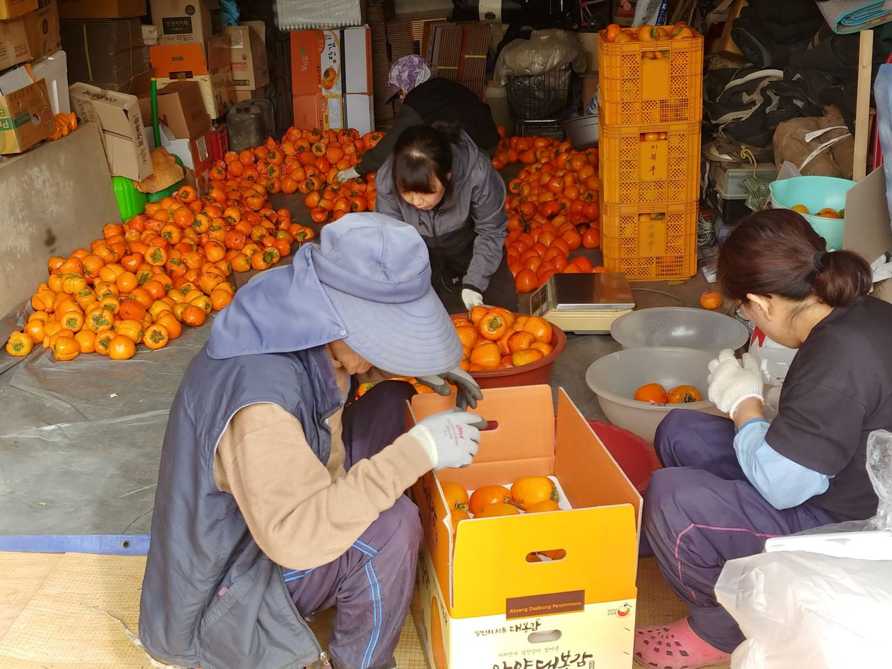
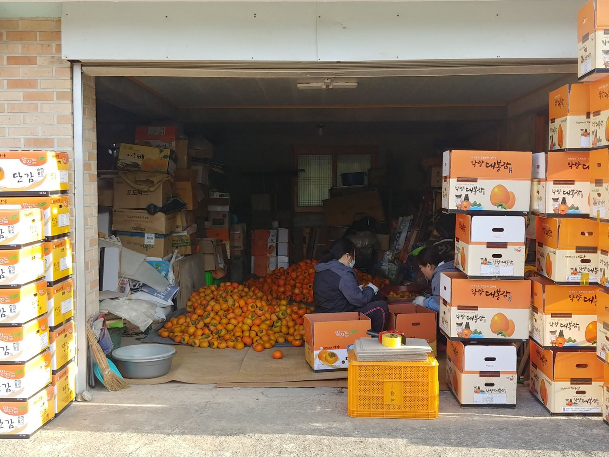
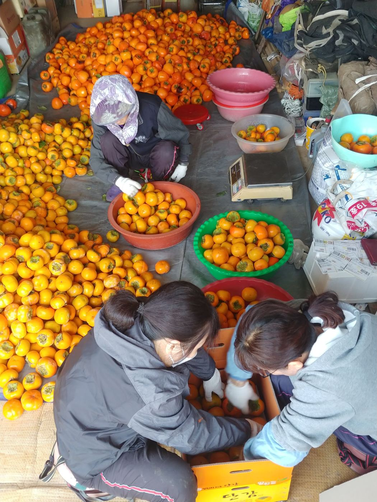
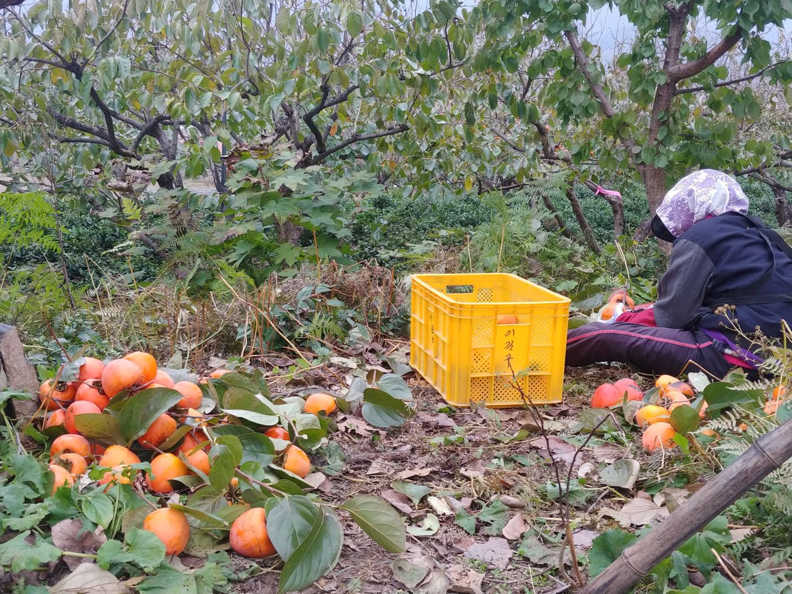

ROTC 선후배 동문께 드리는 감사
보내 주신 마음 덕분에 올해 대봉감이 제 갈 곳을 찾아가고 있습니다.
올해는 태풍 없이 감이 너무 많이 열려 걱정이 컸습니다. 염치 불고하고 드린 부탁에 존경하는 선배님, 사랑하는 후배님들께서 한 상자씩 마음을 보태 주셨습니다.
덕분에 부모님 얼굴에도 웃음이 돌아왔습니다. 감나무 밭에서, 늦은 밤 창고 불빛 아래에서 한 알 한 알 고르고 담은 감입니다. 맛있게 드시고 주변에도 나눠 주세요.
정말 고맙습니다.
하동 악양에서, 이현재와 가족 드림






대봉감, 이렇게 드세요
받으시면 상자를 열어 그늘지고 바람 잘 통하는 곳에 두세요. 10~20일쯤 지나 말랑해진 것부터 홍시로 드시면 됩니다. 덜 익은 감을 랩에 싸서 얼려 두면 한여름에 아이스홍시로 즐길 수 있습니다.